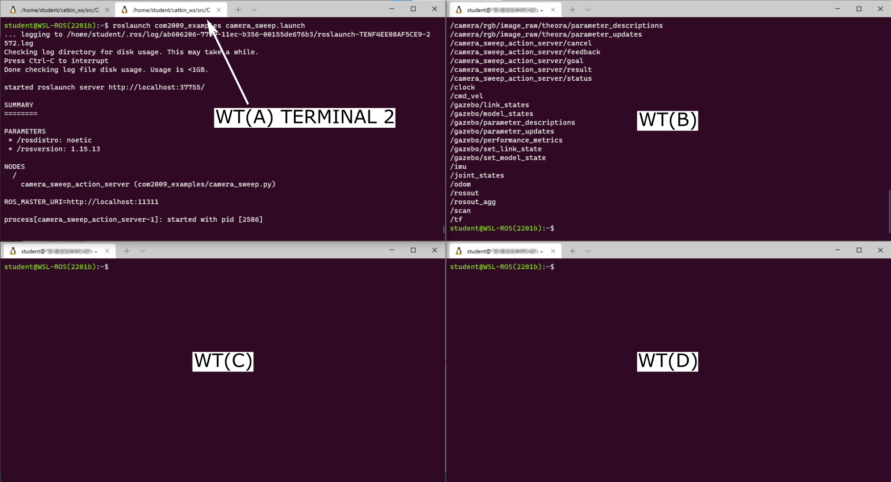
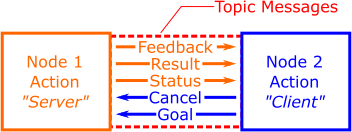

You should be able to complete Exercises 1, 2 & 3 on this page within a two-hour lab session, but you'll need to spend a bit more time on Exercise 4. There are also some advanced exercises that you might want to have a look at in your own time too...
This week you will learn about a third (and final) communication method available within ROS: Actions. Actions are essentially an advanced version of ROS Services, and you will learn about exactly how these two differ and why you might choose to employ an action over a service for certain robotic tasks.
Step 1: Launch WSL-ROS
Launch your WSL-ROS environment by running the WSL-ROS shortcut in the Windows Start Menu (if you haven't already done so). Once installed, the Windows Terminal app should launch with an Ubuntu terminal instance ready to go (TERMINAL 1).
Step 2: Restore your work
When prompted (in TERMINAL 1), enter Y to restore your work from the previous sessions1.
Step 3: Make sure you have the COM2009 Repo installed in your Catkin Workspace!
You should have done this back in Week 2. Check it's there by navigating to it now:
TERMINAL 1:
cd~/catkin_ws/src/COM2009/
If this returns an error saying No such file or directory, then head back here and follow the steps to install it.
Step 4: Launch VS Code
Follow these steps to launch VS Code correctly within the WSL-ROS environment.
Before we talk about what actions actually are, we're going to dive straight in and see one in action (excuse the pun). As you may remember from the Week 3 session, you actually used a ROS Action to make your robot navigate autonomously in Exercise 4, by calling an action server from the command-line. We will do a similar thing now, in a different context, and this time we'll also look at what's going on in a bit more detail.
Exercise 1: Launching an Action Server and calling it from the command-line¶
We'll play a little game here. We're going to launch our TurtleBot3 Waffle in a mystery environment now, and we're going to do this by launching Gazebo headless i.e. Gazebo will be running behind the scenes, but there'll be no Graphical User Interface (GUI) to show us what the environment actually looks like. Then, we'll use an action server to make our robot scan the environment and take pictures for us, to reveal its surroundings!
To launch our TurtleBot3 Waffle in the mystery environment, use the following roslaunch command:
TERMINAL 1:
roslaunchtuos_ros_simulationsmystery_world.launch
Messages in the terminal should indicate that something has happened, but that's about all you will see!
Next, open up a new instance of the Windows Terminal Application by pressing the "New Tab" button whilst pressing the Shift key (we'll call this WT(B)).
In WT(B) have a look at all the topics that are currently active on the ROS network (you should know exactly how to do this by now!)
Return to the original Windows Terminal instance (the one with the Gazebo processes running, and which we'll now refer to as WT(A)), open up a new tab (WT(A) TERMINAL 2) and launch an action server that we have already prepared for you for this exercise:
WT(A) TERMINAL 2:
roslaunchtuos_ros_examplescamera_sweep.launch
Now, return to WT(B) and take a look again at all the topics that are active on the ROS network.
Questions
What do you notice?
Anything new there now compared to when you ran the same command before?
You should in fact notice 5 new items in that list:
A ROS action therefore has five messages associated with it. We'll talk about these in a bit more detail later on, but for now, all we need to know is that in order to call an action, we need to send the action server a Goal (which you may remember doing in Week 3).
Comparison to ROS Services
This is a bit like sending a Request to a ROS Service Server, like we did in the previous session.
ROS Actions use topic messages (unlike ROS Services, which use dedicated service messages). We can therefore tap into the ROS network and observe the messages being published to these in exactly the same way as we have done in previous weeks using rostopic echo. In order to monitor some of these messages now, we'll launch a couple more instances of the Windows Terminal, so that we can view a few things simultaneously:
Once again, launch an additional Windows Terminal instance by pressing the "New Tab" button whilst pressing the Shift key (this one will be called WT(C)):
Do this again to launch another Windows Terminal instance, which we'll call WT(D)
You should now have four Windows Terminal applications open! Arrange these so that they are all visible:

In WT(C) run a rostopic echo command to echo the messages being published to the /camera_sweep_action_server/feedback topic:
WT(C):
rostopicecho/camera_sweep_action_server/feedback
To begin with, you'll see the message:
WARNING: no messages received and simulated time is active.
Is /clock being published?
Don't worry about this.
Do the same in WT(D), but this time to echo the messages being published to the /result part of the action server message.
Now, going back to WT(B), run the rostopic pub command on the /camera_sweep_action_server/goal topic, using the autocomplete functionality in the terminal to help you format the message correctly:
Edit the goal portion of the message by using the left arrow button on your keyboard to scroll back through the message. Modify the sweep_angle and image_count parameters:
sweep_angle is the angle (in degrees) that the robot will rotate on the spot
image_count is the number of images it will capture from its front-facing camera while it is rotating
Once you have decided on some values, hit Enter to actually publish the message and call the action server.
Keep an eye on all four terminal instances. What do you notice happening in each of them?
Now, in WT(B):
Cancel the rostopic pub command by entering Ctrl+C
Once the action had completed, a message should have been published in WT(D) (a "result"), informing you of the filesystem location where the action server has stored the images that have just been captured by the robot:
Navigate to this directory in WT(B) (using cd) and have a look at the content using ll (a handy alias for the ls command):
You should see the same number of image files in there as you requested with the image_count parameter.
Launch eog in this directory and click through all the images to reveal your robot's mystery environment:
WT(B):
eog.
Finally, open another tab in the WT(A) terminal instance (WT(A) TERMINAL 3) and launch the Gazebo client to view the simulation that has, until now, been running headless:
WT(A) TERMINAL 3:
gzclient
The actual simulated environment should now be revealed!! To finish off, close down some active ROS processes and Windows Terminal instances that we've just been working with:
Close down the eog window and the WT(B) Windows Terminal instance.
Stop the rostopic echo commands that are running in WT(C) and WT(D) by entering Ctrl+C in each of them and then close each of these Windows Terminal instances too.
Enter Ctrl+C in WT(A) TERMINAL 3 to stop the Gazebo GUI, but keep the terminal tab open.
Leave the processes running in WT(A) TERMINAL 2 and 1 for now (the Action Server and the headless Gazebo processes).
Summary:
Phew, that was a long one! Essentially, what we did here is launched an action server and then called it from the command-line using rostopic pub. Hopefully, while the action server was performing the task that we had requested, you also noticed that it was providing us with some real-time feedback on how it was getting on (in WT(C)). In the same way as a ROS Service, it should also have provided us with a result (in WT(D)), once the action had been completed. Feedback is one of the key features that differentiates a ROS Action from a ROS Service, but there are other interesting features too, and we'll explore these in more detail now.
As you will have observed from the above exercise, a ROS Action actually seems to work a lot like a ROS Service. We've seen that we have a feedback message associated with an Action though, which is indeed different, but this isn't the main differentiating feature. The key difference is that when a node calls a ROS Action (i.e. an action "Caller" or "Client"), it doesn't need to wait until the action is complete before it can move on to something else: it can continue to do other tasks at the same time. Unlike ROS Services then, ROS Actions are Asynchronous, which makes them useful when implementing robotic behaviours that take a longer time to execute, and which an Action Client might need to be updated on throughout the process.
Recall the five messages associated with the action server from the exercise above, the messages had the following names:
/cancel
/feedback
/goal
/result
/status
The top item there hints at the most important feature of ROS Actions: they can be cancelled (or "preempted"), which we'll learn more about later.
The other thing to note is that - where we used the rosservice command to interrogate the ROS Services that were active on our ROS network previously - Actions use ROS Topics, so we use rostopic commands to interrogate action servers:
rostopic list: to identify the action servers that are available on the network.
rostopic echo: to view the messages being published by a given action server.
rostopic pub: to call an action from the command-line.
Like Services, Action Messages have multiple parts to them, and we need to know what format these action messages take in order to be able to call them. We don't have a tool like rossrv to do this for Actions though, instead we have to use rosmsg, or look for the message definition inside the Action Message Package.
We ran rostopic list to identify our action server in the previous exercise, which told us that there was an action server running called /camera_sweep_action_server:
rostopic list
[some topics...]
/camera_sweep_action_server/cancel
/camera_sweep_action_server/feedback
/camera_sweep_action_server/goal
/camera_sweep_action_server/result
/camera_sweep_action_server/status
[some more topics...]
Every ROS Action has both a cancel and status message associated with them. These are standardised, so the format of these two messages will always be the same, regardless of the type of Action Server we use. We won't worry about these too much for now, but we'll make use of them in some ROS Nodes that we'll build in a short while.
The feedback, goal and result messages will be different for any given action server though, and so we need to know about the format of all of these before we attempt to make a call to the action server.
We can run rostopic info on any of these to find out more about them...
The Type field tells us that the action message belongs to the tuos_ros_msgs package, and we can find out more about the goal message by using rosmsg info. You'll be familiar with how this works by now:
rosmsg info {messageType}
Where {messageType} is established from the output of the rostopic info command above:
Type: tuos_ros_msgs/CameraSweepActionGoal
When working with ROS Actions and the rosmsg command though, we can actually drop the word "Action" in the message Type, so our rosmsg command becomes:
TERMINAL 1:
rosmsginfotuos_ros_msgs/CameraSweepGoal
Which will output:
float32 sweep_angle
int32 image_count
Further Info
rosmsg info tuos_ros_msgs/CameraSweepActionGoal will work as well, but we get a lot of other information in the output that we're not all that interested in. Give it a go and see the difference, if you want to!
In order to call this action server, we need to send a goal, and rosmsg info has just told us that there are two goal parameters that we must provide:
sweep_angle: a 32-bit floating-point value
image_count: a 32-bit integer
So we know more about our Action Server's Goal now, but there are two other parameters we still know nothing about: Result and Feedback. It's important to know about all three things in order to be able to work with the Action Server effectively, and we can use an alternative approach to interrogate all three at the same time...
We know, from above, that the /camera_sweep_action_server messages are part of the tuos_ros_msgs package, so we can navigate to the package directory (using roscd) and look at the actual message definition.
TERMINAL 1:
roscdtuos_ros_msgs/
Actions are always contained within an action folder inside the package directory, so we can then navigate into this folder using cd:
TERMINAL 1:
cdaction/
Use the ll command again here to view all the action messages within the package. Here you should see the CameraSweep.action message listed. Run cat on this file to view the full message definition:
TERMINAL 1:
catCameraSweep.action
#goal
float32 sweep_angle # the angular sweep over which to capture images (degrees)
int32 image_count # the number of images to capture during the sweep
---
#result
string image_path # The filesystem location of the captured images
---
#feedback
int32 current_image # the number of images taken
float32 current_angle # the current angular position of the robot (degrees)
Questions
What are the names of the result and feedback message parameters? (There are three parameters in total.)
What datatypes do these parameters use?
You'll learn how we use this information to develop Python Action Server & Client nodes in the following exercises.
An Action Server provides feedback messages at regular intervals whilst performing an action and working towards its goal. This is one way that an Action Client can monitor the progress of the action that it has requested. Another way it can do this is by monitoring the status of an action. Both of these features enable concurrency, allowing an action client to work on other things whilst waiting for the requested behaviour to be completed by the action server.

Exercise 2: Building a Python Action Client Node with Concurrency¶
You should only have one Windows Terminal application instance open now, with three WSL-ROS terminal tabs in it. TERMINAL 3 should already be idle (i.e. not running any commands), and (if you haven't done so already) enter Ctrl+C in TERMINAL 1 and TERMINAL 2 to stop the headless Gazebo simulation processes and the Camera Sweep Action Server respectively.
In TERMINAL 1 create a new package called week5_actions using the catkin_create_pkg tool as you have done previously. This time, define rospy, actionlib and tuos_ros_msgs as dependencies.
Remember
Make sure you're in your ~/catkin_ws/src/ folder when you run the catkin_create_pkg command!
Once again, run catkin build on this and then re-source your environment:
TERMINAL 1:
First:
catkinbuildweek5_actions
Then:
source~/.bashrc
Navigate to the src folder of this package, create a file called action_client.py (using touch) and set this to be executable (using chmod).
Review the code provided here, and the annotations, then copy and paste the code into your newly created action_client.py file.
Then, in TERMINAL 2, execute the same launch file as before but this time with a couple of additional arguments:
... which will launch the Gazebo simulation in GUI mode this time, as well as the /camera_sweep_action_server too.
In TERMINAL 1, use rosrun to call the action server with the action_client.py node that you have just created...
... something not right? You may need to change the values that have been assigned to the goal parameters, in order for the client to successfully make a call to the server!
The node we have just created, in its current form, uses a feedback callback function to perform some operations while the action server is working. In this case, it simply prints the feedback data that is coming from the Action Server. That's it though, and the client.wait_for_result() line still essentially just makes the client node wait until the action server has finished doing its job before it can do anything else. This still therefore looks a lot like a service, so let's modify this now to really build concurrency into the client node.
First, create a copy of your action_client.py node and call it concurrent_action_client.py (you will need to make sure you are still in the src directory of your week5_actions package before you run this command):
TERMINAL 1:
cpaction_client.pyconcurrent_action_client.py
We want to use the status message from the action server now, and we can find out a bit more about this as follows:
Use rostopic info camera_sweep_action_server/status to find the message type.
Then, use rosmsg info (using the message type you have just identified) to tell you all the status codes that could be returned by the action server.
You should have identified the following states, listed in the status_list portion of the message:
We can set up our action client to monitor these status codes in a while loop, and then perform other operations inside this loop until the action has completed (or has been stopped for another reason).
To do this, replace the client.wait_for_result() line in the concurrent_action_client.py file with the following code:
rate=rospy.Rate(1)i=1print("While we're waiting, let's do our seven-times tables...")whileclient.get_state()<2:print(f"STATE: Current state code is {client.get_state()}")print(f"TIMES TABLES: {i} times 7 is {i*7}")i+=1rate.sleep()
Run the concurrent_action_client.py node and see what happens this time. Essentially, we know that we can carry on doing other things as long as the status code is less than 2 (either PENDING or ACTIVE), otherwise either our goal has been achieved, or something else has happened...
Actions are extremely useful for controlling robotic tasks or processes that might take a while to complete, but what if something goes wrong, or if we just change our mind and want to stop an action before the goal has been reached? The ability to preempt an action is one of the things that makes them so useful.
Exercise 3: Building a Preemptive Python Action Client Node¶
In TERMINAL 1 you should still be located within the src folder of your week5_actions package. If not, then go back there now! Create a new file called preemptive_action_client.py and make this executable.
Have a look at the code here, then copy and paste it into the preemptive_action_client.py node that you have just created.
Here, we've built an action client that will cancel the call to the action server if we enter Ctrl+C into the terminal. This is useful, because otherwise the action server would continue to run, even when we terminate the client. A lot of the code is similar to the Action Client from the previous exercise, but we've built a class structure around this now for more flexibility. Have a look at the code annotations and make sure that you understand how it all works.
Run this using rosrun, let the server take a couple of images and then enter Ctrl+C to observe the goal cancelling in action.
Note
You'll need to set some values for the goal parameters again!
We can also cancel a goal conditionally, which may also be useful if, say, too much time has elapsed since the call was made, or the caller has been made aware of something else that has happened in the meantime (perhaps we're running out of storage space on the robot and can't save any more images!) This is all achieved using the cancel_goal() method.
Have a go now at introducing a conditional call to the cancel_goal() method once a total of 5 images have been captured.
You could use the captured_images attribute from the CameraSweepFeedback message to trigger this.
ROS Actions work a lot like ROS Services, but they have the following key differences:
They are asynchronous: a client can do other things while it waits for an action to complete.
They can be cancelled (or preempted): If something is taking too long, or if something else has happened, then an Action Client can cancel an Action whenever it needs to.
They provide feedback: so that a client can monitor what is happening and act accordingly (i.e. preempt an action, if necessary).
This mechanism is therefore useful for robotic operations that may take a long time to execute, or where intervention might be necessary.
Cancel all active processes that you may have running before moving on.
So far we have looked at how to call an action server, but what about if we actually want to set up our own? We've been working with a pre-made action server in the previous exercises, but so far we haven't really considered how it actually works. First, let's do some detective work... We launched the Action Server using roslaunch in Exercise 1:
roslaunchtuos_ros_examplescamera_sweep.launch
Questions
What does this tell us about the package that the action server node belongs to?
Where, in the package directory, is this node likely to be located?
How might we find out the name of the Python node from the camera_sweep.launch file?
Once you've identified the name and the location of the source code, open it up in VS Code and have a look through it to see how it all works.
Don't worry too much about all the content associated with obtaining and manipulating camera images in there, we'll learn more about this in the next session. Instead, focus on the general overall structure of the code and the way that the action server is implemented.
As a starting point, consider the way in which the action server is initialised and the way a callback function is defined to encapsulate all the code that will be executed when the action is called:
These are imported (at the start of the code) from an external tb3.py module that also lives in the same directory as the action server itself:
fromtb3importTb3Move,Tb3Odometry
We do this to simplify the process of obtaining odometry data and controlling the robot, whilst keeping the actual action server code itself more concise. Have a look at the tb3.py module to discover exactly how these Python classes work.
Look inside the action server callback function to see how the camera sweep operation is performed once the action has been called:
defaction_server_launcher(self,goal):...
Consider the error checking that is performed on the goal input variables, and how the call to the action server is aborted should any of these goal requests be invalid:
success=Trueifgoal.sweep_angle<=0orgoal.sweep_angle>180:print("Invalid sweep_angle! Select a value between 1 and 180 degrees.")success=False...ifnotsuccess:self.result.image_path="None [ABORTED]"self.actionserver.set_aborted(self.result)return
Consider how preemption is implemented in the server, and how the Action is stopped on receipt of a preempt request:
ifself.actionserver.is_preempt_requested():...
Also have a look at the way a feedback message is constructed and published by the server:
Finally, consider how we tell the server that the action has been completed successfully, how the result message is published to the caller, and how we make the robot stop moving:
Exercise 4: Developing an "Obstacle Avoidance" behaviour using an Action Server¶
Knowing what you now do about ROS Actions, do you think the Service Server/Client systems that we developed last week were actually appropriate use cases for ROS Services? Probably not! In fact, Action Server/Client methods would have probably been more appropriate!
You are now going to construct your own Action Server and Client nodes to implement a more effective obstacle avoidance behaviour that could form the basis of an effective search strategy. For this, you're going to need to build your own Search Server and Client.
Step 1: Launch a simulation
There's a simulation environment that you can use as you're developing your action server/client nodes for this exercise. Launch the simulation in TERMINAL 1, with the following roslaunch command:
In TERMINAL 2 navigate to the src folder of your week5_actions package, create a Python script called search_server.py, and make it executable.
The job of the Action Server node is as follows:
The action server should make the robot move forwards until it detects an obstacle up ahead.
Similarly to the Service Server that you created last week, your Action Server here should be configured to accept two goal parameters:
The speed (in m/s) at which the robot should move forwards when the action server is called. Consider doing some error checking on this to make sure a velocity request is less than the maximum speed that the robot can actually achieve (0.26 m/s)!
The distance (in meters) at which the robot should stop ahead of any objects or boundary walls that are in front of it. To do this you'll need to subscribe to the /scan topic. Be aware that an object won't necessarily be directly in front of the robot, so you may need to monitor a range of LaserScan data points (within the ranges array) to make the collision avoidance effective (recall the LaserScan callback example and also have a look at the Tb3LaserScan class within the tuos_ros_examples/tb3.py module that might help you with this).
Whilst your server performs its task it should provide the following feedback to the Action Caller:
The distance travelled (in meters) since the current action was initiated.
To do this you'll need to subscribe to the /odom topic. Remember that there's a Tb3Odometry class within the tuos_ros_examples/tb3.py module that might help you with obtaining this data.
Remember also that your robot's orientation shouldn't change over the course of a single action call, only its linear.x and linear.y positions should vary. Bear in mind however that the robot won't necessarily be moving along the X or Y axis, so you will need to consider the total distance travelled in the X-Y plane. You should have done this in the Week 3 move_square exercise, so refer to this if you need a reminder.
Finally, on completion of the action, your server should provide the following threeresult parameters:
The total distance travelled (in meters) over the course of the action.
The distance to the obstacle that made the robot stop (this should match, or very close to, the distance that was provided by the Action Client in the goal).
The angle (in degrees) at which this obstacle is located in front of the robot (Tb3LaserScan class within the tuos_ros_examples/tb3.py module, which may already provide this).
An action message has been created for you to use for this exercise: tuos_ros_msgs/Search.action. Navigate to the action folder of the tuos_ros_msgs package directory (or use rosmsg info ... in the terminal) to find out everything you need to know about this action message in order to develop your Action Server (and Client) nodes appropriately.
We've put together some template code to help you with this. For further guidance though, you should also refer to the code for /camera_sweep_action_server node, which we talked about earlier: a lot of the techniques used by /camera_sweep_action_server node will be similar to what you'll need to do in this exercise.
Whenever you're ready you can launch your action server from TERMINAL 2, using rosrun, as below:
TERMINAL 2:
rosrunweek5_actionssearch_server.py
Step 3: Build the Action Client
In TERMINAL 3 navigate to the src folder of your week5_actions package, create a Python script called search_client.py, and make it executable.
The job of the Action Client node is as follows:
The client needs to issue a correctly formatted goal to the server.
The client should be programmed to monitor the feedback data from the Server. If it detects (from the feedback) that the robot has travelled a distance greater than 2 meters without detecting an obstacle, then it should cancel the current action call using the cancel_goal()actionlib method.
Use the techniques that we used in the Client node from Exercise 3 as a guide to help you with this. There's also a code template here to help you get started.
Once you have everything in place launch the action client with rosrun as below:
TERMINAL 3:
rosrunweek5_actionsaction_client.py
If all is good, then this client node should call the action server, which will - in turn - make the robot move forwards until it reaches a certain distance from an obstacle up ahead, at which point the robot will stop, and your client node will stop too. Once this happens, reorient your robot (using the turtlebot3_teleop node) and launch the client node again to make sure that it is robustly stopping in front of obstacles repeatedly, and when approaching them from a range of different angles.
Important
Make sure that your preemption functionality works correctly too, so that the robot never moves any further than 2 meters during a given action call!
Some advanced exercises (if you're feeling adventurous!)¶
Want to do more with the ROS skills that you have now developed?! Consider the following advanced exercises that you could try out now that you know how to use ROS Actions!
Note
We know that you have done a lot this week already, and these are really just suggestions for more advanced things that you may want to explore in your own time, or to help with the further work that you will do in Lab Assignment #2...
Advanced Exercise 1: Implementing a Search strategy¶
What you developed in the previous exercise could be used as the basis for an effective robot search strategy. Up to now, your Action Client node should have the capability to call your Search.action server to make the robot move forwards by 2 meters, or until it reaches an obstacle (whichever occurs first), but you could enhance this further:
Between action calls, your client node could make the robot turn on the spot to face a different direction and then issue a further action call to make the robot move forwards once again.
The turning process could be done at random, or it could be informed by the result of the last action call, i.e.: if (on completion) the server has informed the client that it detected an object at an angle of, say, 10° anti-clockwise from the front of the robot, then the client might then decide to turn the robot clockwise in an attempt to turn away from the object before issuing its next action call to make the robot move forwards again.
By programming your client node to repeat this process over and over again, the robot would (somewhat randomly) travel around its environment safely, stopping before it crashes into any obstacles and reorienting itself every time it stops moving forwards. This is effectively an implementation of a basic robotic search strategy!
Enhancing this further...
Imagine SLAM was running at the same time too... your robot could be building up a map of its environment in the background as it slowly explored every part of it!
Advanced Exercise 2: Autonomous Navigation using waypoint markers¶
In the Week 3 session you used SLAM to construct a map of an environment (Exercise 3) and then issued navigation requests to the move_base action server, via the command-line, (Exercise 4) to make your robot move to a zone marker, based on coordinates that you had established beforehand. Now that you know how to build Action Client Nodes in Python you could return to your week2_navigation package and build a new node that makes the robot move sequentially between each zone marker programmatically.
Your node could cycle through the coordinates of all four of the zone markers (or "waypoints") that you established whilst using SLAM to build a map of the environment (as per Exercise 3).
Your node could monitor the status of the move_base_simple action call to know when the robot has reached a zone marker, so that it knows when to issue a further action call to move on to the next one.
You could refer to the launch file that you created in the Week 3 session to launch all the Navigation processes that need to be running in order to enable and configure the ROS Navigation Stack appropriately for the TurtleBot3 robot.
How ROS Actions work and why they might be useful.
How to develop Action Client Nodes in Python which can perform other tasks concurrently to the action they have requested, and which can also cancel the requested action, if required.
How to use standard ROS tools to interrogate the topic messages used by an action server, allowing you to build clients to call them, and to also allow you to build standalone action servers yourself using bespoke Action messages.
How to harness this communication method to implement a behaviour that could be used as the basis for a genuine robotic search strategy.
You should now have developed a good understanding of the three communication methods that are available within ROS to facilitate communication between ROS Nodes:
Topic-based messaging.
ROS Services.
ROS Actions.
Through this course you've now gained some practical experience using all three of these, but you may still be wondering how to select the appropriate one for a certain robot task...
This ROS.org webpage summarises all of this very nicely (and briefly), so you should have a read through this to make sure you know what's what. In summary though:
Topics: Are most appropriate for broadcasting continuous data-streams such as sensor data and robot state information, and for publishing data that is likely to be required by a range of Nodes across a ROS network.
Services: Are most appropriate for very short procedures like quick calculations (inverse kinematics etc.) and performing short discrete actions that are unlikely to go wrong or will not need intervention (e.g. turning on a warning LED when a battery is low).
Actions: Are most appropriate for longer running tasks (like moving a robot), for longer processing calculations (processing the data from a camera stream) or for operations where we might need to change our mind and do something different or cancel an invoked behaviour part way through.
Remember, the work you have done in the WSL-ROS environment during this session will not be preserved for future sessions or across different University machines automatically! To save the work you have done here today you should now run the following script in any idle WSL-ROS Terminal Instance:
wsl_rosbackup
This will export your home directory to your University U: Drive, allowing you to restore it at the start of the next session.
Remember: you can also use the wsl_ros restore command, to restore your work at any time. ↩